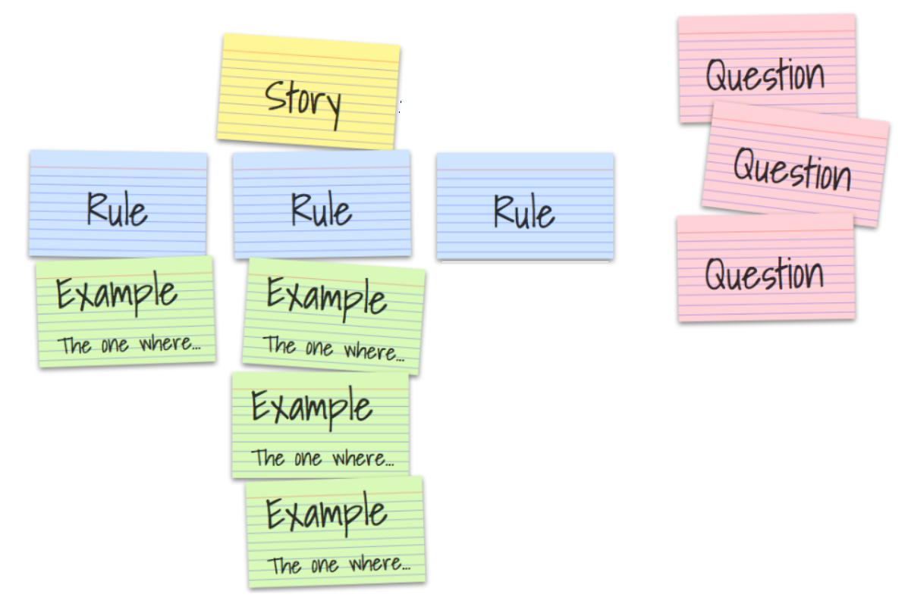
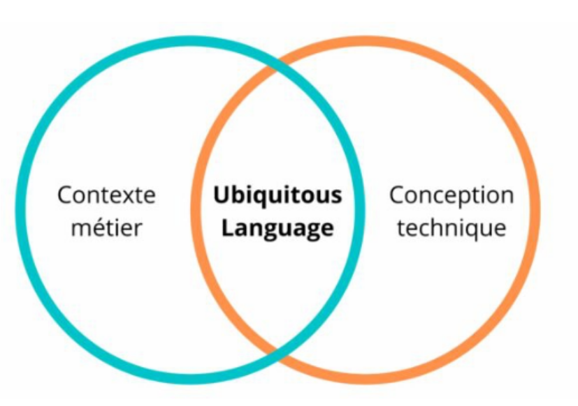

Découverte du BDD
Behavior Driven Development
Inventé par qui ?
Par Dan North en 2003 !
Qu'est-ce que c'est ?
Exprimer les problématiques métiers aux travers d'exemples
Pourquoi ?
Pour s’assurer que toutes les parties prenantes se soient bien comprises
Les 3 amis

Découverte
- on présente ce qui est attendu à l'équipe
- on échange sur le sujet
- le but est d’avoir une bonne compréhension partagée
Exemple mapping
Formulation

Fonctionnalité: Une description de ce qui est attendu
En tant que <type d’utilisateur>,
Je souhaite <fonctionnalité à réaliser>,
Ainsi <bénéfice que cela apportera>.
Scénario: Une description du scénario
Étant donné que [un contexte]
Et [plus d'informations sur le contexte]
Quand [un événement]
Et [un autre événement]
Alors [résultat attendu]
Et [un autre résultat attendu]
Mais [un autre résultat attendu]
Fonctionnalité: Valider un bon de livraison
En tant que client,
Je souhaite valider un bon de livraison,
Afin de réceptionner la marchandise reçue dans mon stock.
Scénario: BL EDI sans aucune erreur
Étant donné que toutes les lignes ont une ref associée
et la bonne quantité reçue ou ne sont pas gérées en stock
Et qu’un fournisseur à été renseigné
Quand le client valide le BL
Alors le BL passe en état “traité”
Et les articles sont ajoutés au stock
Et le client est redirigé sur la liste des BL
Scénario: BL manuel valide
Étant donné que etc...
Scénario: BL EDI avec des quantités manquantes
Étant donné que le client a saisi
| Ligne | Référence | Qté reçue | Qté |
|---|---|---|---|
| 1 | A | 1 | 1 |
| 2 | B | 0 | 1 |
| 3 | C | 2 | 2 |
| 4 | D | 1 | 2 |
| Ligne | Référence | Qté reçue | Qté |
|---|---|---|---|
| 2 | B | 0 | 1 |
| 4 | D | 1 | 2 |
| Ligne | Référence | Qté reçue | Qté |
|---|---|---|---|
| 1 | A | 1 | 1 |
| 3 | C | 2 | 2 |
| 4 | D | 1 | 2 |